Область применения
- Газопроводы и нефтепродуктопроводы высокого давления (СНиП 2.05.06)
- Газораспределительные системы (СНиП 2.04.08-87, СНиП 42-01-2002)
- Водопроводы (СНиП 2.04.02)
Цели разработки
- Автоматизация проектирования трубопроводов
- Повышение качества проектирования
- Снижение стоимости проектов
- Увеличение скорости работы
- Минимизация расчетных ошибок
- Оптимизация трассировки трубопроводов
Основные возможности
- Создание цифровой модели рельефа (ЦМР)
- Трассировка трубопроводов с учетом коммуникаций
- Построение профиля поверхности
- Редактирование профиля трубопровода
- 3D расчёт земляных работ
- Интеграция с Excel
- Сетевая база данных проектов
- Экспорт в форматы СТАРТ и CPIPE
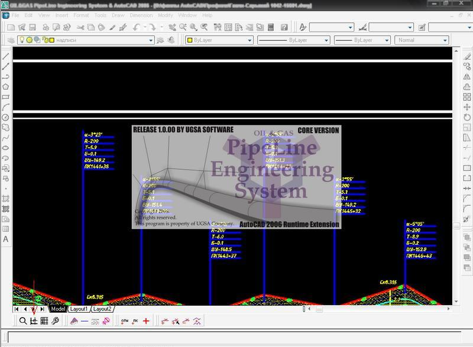
Рис. 1 — Загрузка программы
Создание цифровой модели рельефа (ЦМР)
В программе возможно создание ЦМР на основе:
- текстовых файлов
- точек AutoCAD (DbPoint)
- отметок на чертеже
- 3D-объектов
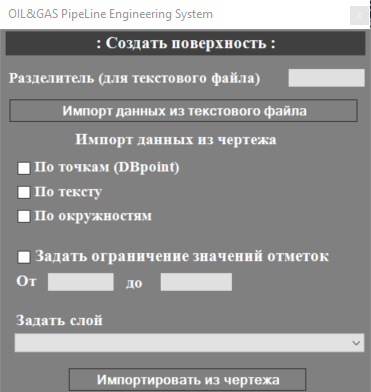
Видео демонстрации
Профиль трубопровода
Построение и редактирование профиля трубопровода:
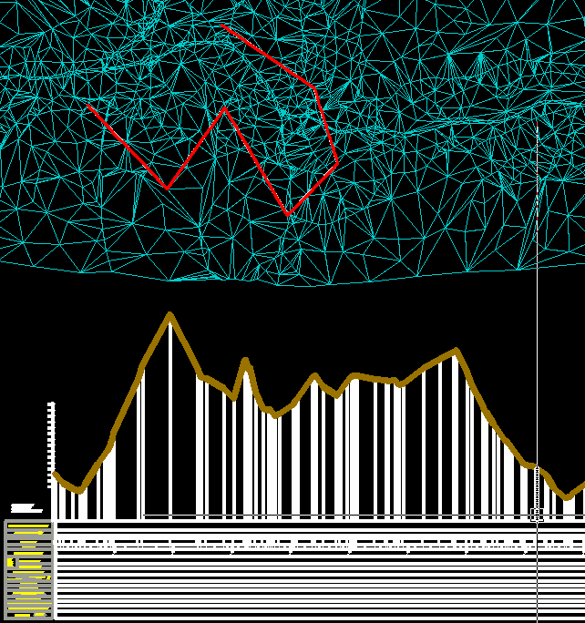
Рис. 10
Работа с проектом
Для создания проекта используется рабочая область.
После задания исходных данных автоматически формируется профиль трубопровода.
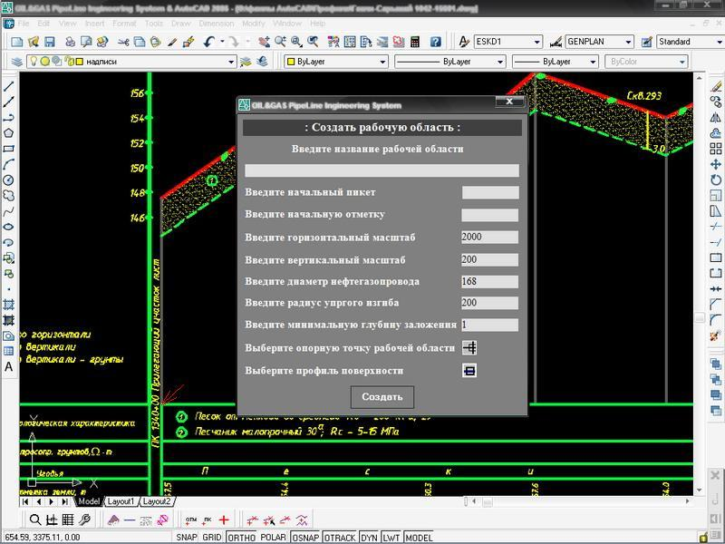
Рис. 2
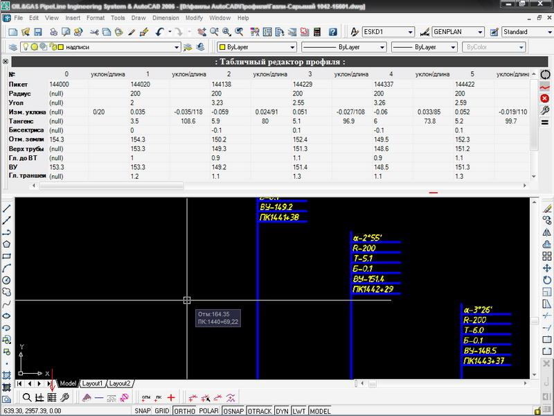
Рис. 3
Подсчёт объемов работ
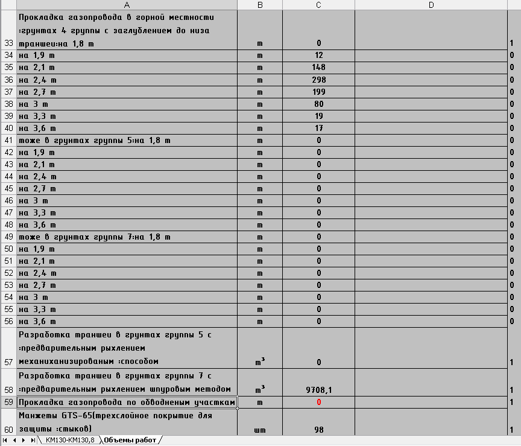
Рис. 4
Оформление и 3D моделирование
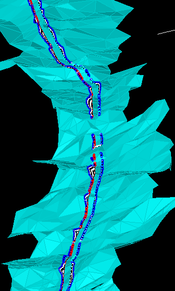
Рис. 5
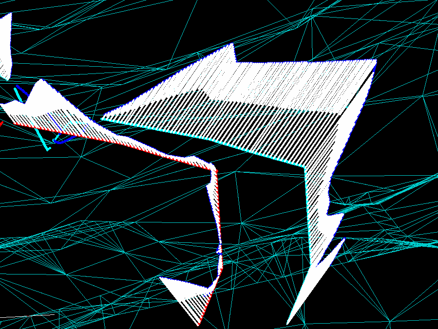
Рис. 6
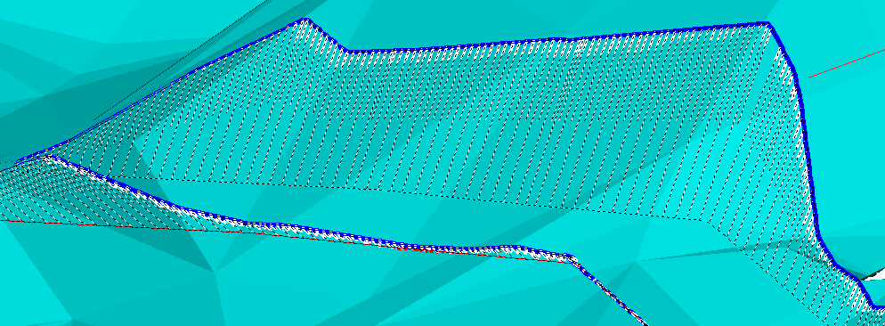
Рис. 7
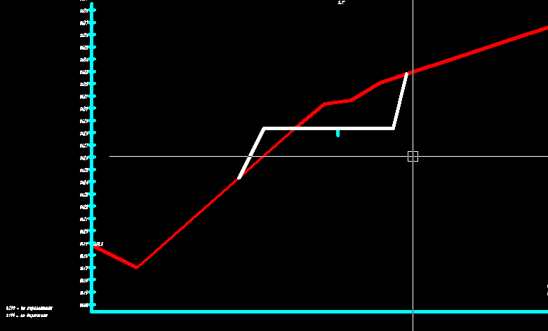
Рис. 8
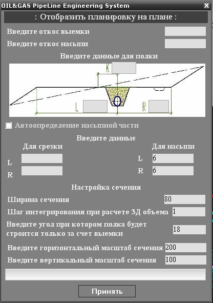
Рис. 9
Экспорт данных
Формат СТАРТ — расчёт прочности и устойчивости трубопроводов
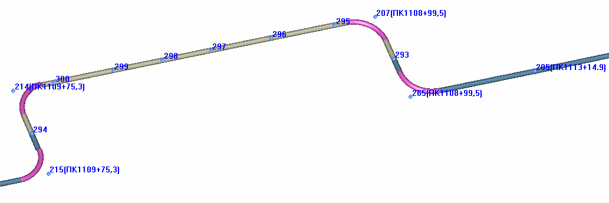
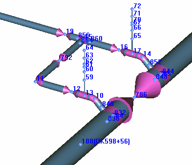
Экспорт в формат CPIPE
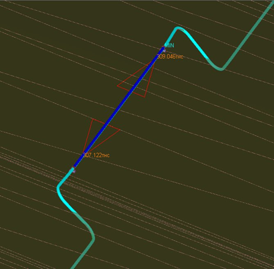
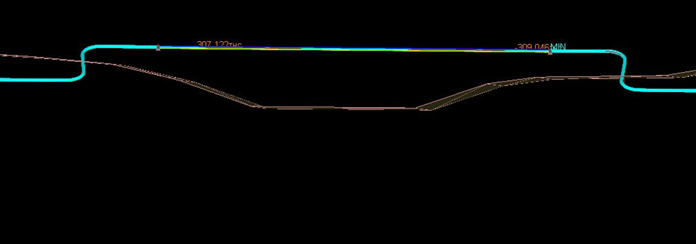
Примечание
Оформление чертежей (подвалы, флажки и другие элементы)
могут настраивается индивидуально под требования заказчика.